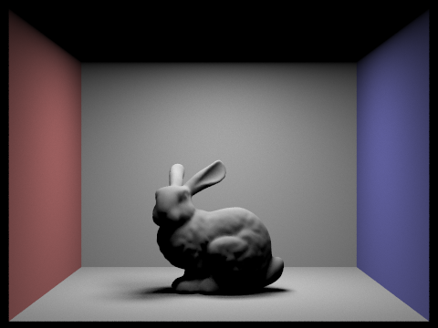

CS 184: Computer Graphics and Imaging, Spring 2019
Project 3: Pathtracer
Z Wang
This content can be found on my Github Page: zchickenwang.github.io.
Overview
In order to render realistic scenes, we need to generate realistic lighting. In this project, we focus on pathtracing: using a simple, particle model of light to mimic the effects of light on a scene.
We'll start off at a high-level: given a reliable physics model, how do we sample the lighting at each sensor pixel. We then step into to the model, asking questions like 1) how do we know what part of a scene each pixel in a given camera view should represent, 2) how do we know the lighting qualities of a point in the scene (e.g. direct, indirect light), and 3) how can we make these computations efficient? In doing so, we'll gain some insight into the mechanics behind light ray generation and manipulation.
Part I: Ray Generation and Scene Intersection
Ray Generation
At a high-level, we're firing light rays through the camera view. These rays will start at the camera position, pass through a pixel in the sensor plane, and land somewhere in the scene world.
In order to make sure each pixel is sampled, we'll generate some fixed number of rays through each pixel: call this ns_aa. As with sampling in rasterization, we have a choice in how to distribute these samples/pixel. With rasterization, we spread the samples uniformly across the pixel area. Here, we'll try randomly picking positions (with a high-enough ns_aa value, this converges to a uniform distribution).
So how exactly is a ray created? After we pick a point on the sensor plane, i.e. a 2D position on the screen, we need to translate this into a 3D position in the world space. We'll do this using the sensor plane's field-of-view bounds, which map the corners of the sensor plane to 3D positions in the scene world. Each ray then 1) starts at the camera position, 2) travels in the direction given by the pixel sample position, and 3) is limited by the bounds of the scene that our current camera position can capture.
Primitive Intersection
Once we fire the ray, how can we tell where it lands in the scene? If we consider the scene as being composed of primitive shapes (like in polygon meshes), then we're looking for a way to test if a ray intersects a shape. In this project, we'll examine two basic primitives: triangles and spheres.
To deal with triangles, let's consider one on some object mesh. It'll lie on some plane, so one approach is finding the intersection of the ray on that plane. We can then use existing, 2D methods (like barycentric coordinates) to see if that intersection point lies within the triangle.
In algebraic terms, we have equations for both the path of the ray and the triangle plane (created using the triangle vertices). Solving this system of equations tells us if the ray intersects the plane, and if it does, gives the barycentric coordinates of the intersection point. If these coordinates all lie between 0 and 1, then we know the intersection point lies within the triangle (moreover, we know exactly where--this is necessary for interpolating the surface normal at that point).
What about spheres? We can adopt the same approach: solve the system of equations given by the ray path and the sphere (the sphere given by the set of points with distance radius from the center). This system devolves into a quadratic equation with one unknown (time w.r.t the ray trajectory), which can be easily solved.
Results
Here are some results we get.
 1a. Issa Cow (Render time: 170.8s).
1a. Issa Cow (Render time: 170.8s).
|
1b. Issa Beetle (Render time: 168.6s).
|
Part II: Bounding Volume Hierarchy
A massive problem with our naive approach is time complexity. For each ray, we're testing its intersection with every object in the scene.
As a result, render time is exponential in the number of objects, making any complex scene impractical.
This naive approach is stupid because most of the primitives will lie nowhere near the ray, and we should incoporate this knowledge into the algorithm. One intuitive way
to do this is to organize the scene objects into some sort of spatial hierarchy, like with R-trees or KD-trees. In this way, we'll be able to prune
the space of primitives that could possibly lie in the current ray's path.
The implementation we'll go with is using a Bounding Volume Hierarchy. Here, instead of partitioning on space, we'll partition on object set. Essentially, we'll
recursively divide the set of objects into a tree of subsets until each leaf's subset has size below some certain threshold. While this approach is
more robust to spatially-skewed scenes than KD-trees, it also means that bounding boxes of different nodes can overlap--this means we can't leverage the pruning
methods of KD-trees.
Algorithm
The algorithm itself is fairly simple--we'll first consider the set of all objects in the scene. At each iteration, we first pick
an axis to split on: this is chosen as the axis with the greatest extent in the bounding box of all objects. We'll then pick a
split point along this axis, chosen as the average of the object's individual bounding box centroids. An alternative method is simply splitting
the axis evenly in half, however this runs into potentially-infinite recursion if all the objects lie on an edge of the bounding box. Using the
average of the centroids ensures that both sides of the split point will contain objects.
Now if we wish to find intersections of a given ray, we can traverse the BVH tree. At inner nodes, we check if the ray crosses the
bounding box of the node. If so, we recurse on the node's children; otherwise we continue. At leaf nodes, we perform the triangle/sphere test from the previous
part on all the leaf's encompassed primitives. If we simply want to know whether a ray intersects some object, then we can stop upon finding an intersection.
To find the closest or first intersection, however, we need to traverse the entire BVH; this is because the BVH is not necessarily oriented in the same
direction as the ray, so we must find all intersections first, then sort by distance to the ray's origin. In order to reduce this workload,
we can update the ray's bounds upon seeing any intersection: basically, we limit the ray's path to be at most the distance to the closest intersection we've
found so far.
Results
Now we can render scenes with hundreds of thousands of triangles with ease. As a test, we can keep track of rendering metrics with this BVH acceleration feature
turned off and on. The cow shown in image a was rendered without acceleration, and took ~171 sec to render. The naive approach traces 1,917,178 rays, performing
over 1000 intersection tests per ray! In contrast, our cow is rendered in image b with acceleration. Here, render time is reduced to a mere
0.286 sec. We trace 1,571,736 rays (some are pruned), and perform just 2.6 intersection tests per ray. Yippee! BVHs accelerate the beetle's render time
just as much: from 169 sec to 0.178 sec.
So why do BVH's make such a huge difference? The idea is that for each ray, we're constantly reducing the search space of objects it could possibly intersect. First off, we check the ray
cheaply against the BVH's inner node bounding boxes. Any nodes which lie far enough away from the ray will not be explored. Moreover, we're also constricting the ray length, by
clipping its max distance to the closest intersection we've seen so far. Any nodes which lie beyond that distance will also not be explored.
 2a. Max Planck.
2a. Max Planck.
|
 2b. Room with spheres.
2b. Room with spheres.
|
Part III: Direct Illumination
Now that we have a high-level approach for generating rays and testing intersections, we need to dive deeper into light properties.
If a ray intersects some shape, how do we know how light or dark this ray should make its pixel? In direct lighting, we'll test whether or not
each ray-primtive intersection is in direct view of a light source, or some shape that directly emits light. This stands in contrast with indirect lighting, where non-light objects
reflect rays from a light source indirectly onto our intersection point.
Uniform Hemisphere Sampling
How do we know if some point can directly see a light source? One way is to send a bunch of rays in random directions within the hemisphere
around the surface normal at our point (any rays that pass through the object from the opposite hemisphere would not be direct). For each of these
rays, we'll get the radiance, or directly-emitted light, from its first intersection. However, this radiance is not necessarily preserved after the light bounces
off of our point--indeed, we need an incoming-to-outgoing conversion; this is defined by a BSDF for diffuse surfaces (a function which returns outgoing radiance given incoming radiance
and the incoming/outgoing direction vectors). We'll also need to add two factors: 1) a cosine factor representing the difference between our randomly-sampled incoming direction
and the surface normal at the intersection, and 2) a inverse probability factor representing the probability that our sample direction was chosen. Since all directions
in the hemisphere are equally likely to be chosen, this probability is a constant for now (1/2pi, as 2pi steradians define a hemisphere).
Importance Sampling
The issue with uniform hemisphere sampling is that it introduces noise and inefficiency. If we know beforehand the positions of a scene's light sources, then we shouldn't need to
send rays in random directions to calculate direct lighting; instead, we should only send rays in the direction of the light sources!
With this approach, we'll loop through the scene lights and send some amount of rays in sampled directions which lie in the path to a light. If these rays don't
intersect with any other non-light objects along the way, then they can contribute to the direct lighting in the current intersection position. Our calculations
will be the same as before, except our probability factor must change. Now that we've added bias in our direction distribution (biased toward the light sources), we
need to divide each outgoing radiance by the probability that its incoming direction was chosen. Division makes sense here because a direction that's very unlikely to
be chosen should be weighted higher to account for it's lower frequency.
Results
Here we render those same scenes using both uniform and importance sampling. Notice how much more noise there is in uniform sampling--why does this happen? Intuitively, let's consider the percentage of sampled directions which lie in the path of a given light. In uniform sampling,
we're wasting a lot of samples which have no chance of landing on a light source, and this percentage can be really low if the scene lights are scarce.
In importance sampling, however, this percentage is 100%, so we're effectively pruning away directions that do not point toward a light.
Now consider the total number of samples which land on a light source. For this number to be equal between the sampling methods, we need a much
higher total sample count in uniform sampling. In other words, holding the sample count constant means that lights are tested with a much higher density
of samples in importance sampling. That's why uniform sampling does converge to the same result, but takes much more sampling (how much more depends on the scene).
The other images reflect changes in 1 sample/pixel renderings of some spheres over 1, 4, 16, and 64 light rays/pixel using importance sampling. Looking at the soft shadows under the spheres,
we can see the effects of sampling count--fewer samples introduce lots of noise because points along the soft shadow can see a portion of the light source. Taking more samples here, then, is a form of
antialiasing, of converging toward the true light value.
|
3a. 64 samples/pixel, 32 light rays/pixel, uniform sampling.
|

3b. 64 samples/pixel, 32 light rays/pixel, importance sampling.
|
|
3c. 16 samples/pixel, 8 light rays/pixel, uniform sampling.
|
3d. 64 samples/pixel, 32 light rays/pixel, importance sampling.
|
|
3e. 1 sample/pixel, 1 light ray/pixel, importance sampling.
|
3f. 1 sample/pixel, 4 light rays/pixel, importance sampling.
|
|
3g. 1 sample/pixel, 16 light rays/pixel, importance sampling.
|
3h. 1 sample/pixel, 64 light rays/pixel, importance sampling.
|
Part IV: Global Illumination
Global lighting requires not just direct light but indirect light as well.
Let's consider an intersection point like before. Instead of testing whether this point is lit directly by scene lights,
we instead recursively generate new rays from this point and see if these rays (which follow bounces off objects) eventually
land on a light source.
One notes that this type of recursion is infinite--we can always keep following a ray through potentially-endless bounces; but
since more bounces weaken the resulting radiance contribution to our original point (due to our cosine and bsdf factors), we can truncate these paths at some point.
One way to do this is Russian Roulette, where there's a probability (around 0.3-0.4) that a path is terminated upon each bounce (although
if indirect lighting is enabled, we'll ensure each path bounces at least once.
The end algorithm is as follows: for an intersection point, we first find its emitted light (nonzero if the point lies on a light source). We'll then
find its direct illumination using the previous methods. Finally, we'll start exploring bounces off of this point, following those paths and
accumulating the direct light values at each bounce (note that if there's no bounce, i.e. the path doesn't intersect anything, then we terminate the path by default).
Results
Here are some results.
Images a-b are examples of global lighting.
Images c-d break apart global lighting into its direct and indirect constituents. Notice reflections off the floor and walls are captured
in the indirect contribution.
Images e-j reflect changes in renderings over max_ray_depth values of 0, 1, 2, 3, 50, and 100 (where max_ray_depth is a hard cap
on the path length of bounces when calculating indirect light).
To conclude, we'll render a scene with spheres over varying sample/pixel rates, ranging from 1 to 1024.
|
4a. 64/16 samples/light rays pp, max ray depth 5.
|
4b. 64/16 samples/light rays pp, max ray depth 5.
|
|
4c. Direct lighting only.
|
4d. Indirect lighting only.
|
|
4e. 1024/16 samples/light rays pp, max ray depth 0.
|
4f. 1024/16 samples/light rays pp, max ray depth 1.
|
|
4g. 1024/16 samples/light rays pp, max ray depth 2.
|
 4h. 1024/16 samples/light rays pp, max ray depth 3.
4h. 1024/16 samples/light rays pp, max ray depth 3.
|
|
4i. 1024/16 samples/light rays pp, max ray depth 50.
|
4j. 1024/16 samples/light rays pp, max ray depth 100.
|
|
4k. 1 sample/pixel.
|
4l. 2 samples/pixel.
|
|
4m. 4 samples/pixel.
|
4n. 8 samples/pixel.
|
|
4o. 16 samples/pixel.
|
4p. 64 samples/pixel.
|
|
4q. 512 samples/pixel.
|
4r. 1024 samples/pixel.
|
Part V: Adaptive Sampling
Let's go back to the first part, where we generate rays shooting from the camera through pixels on the sensor plane. In our current
approach, we're sending some fixed number of sample rays through each pixel. Could this be made more efficient?
A key observation is that some or many pixels could have a constant or low-variance lighting values across its area. If a pixel projects
onto a wall in the scene, then any ray going through this pixel will probably give the same resulting light value. If a pixel projects into
nothing, then every sample going through this pixel will give no light. If this is the case, why bother continue sending sample rays when we already
know the value for this pixel?
In reality, it's difficult to truly know that we have a correct pixel value, as this would require lots of work mapping pixel areas to space in the scene.
Instead, we can simply keep a running average and variance of all the values seen so far from samples for a given pixel. Once this variance dips below
a certain threshold, then we can stop sampling for this pixel. The exact calculation is drawn from z-tests in statistics, and we'll stop sampling
a pixel once we know with 95% confidence that new samples won't significantly affect our current value.
Results
Here's an image rendered using adaptive sampling, and it's corresponding heat map of samples/pixel (where blue is the lower bound and red is the upper bound).
|
5a. Bunny (taking 2048 samples/pixel).
|
5b. Heap map.
|